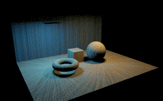
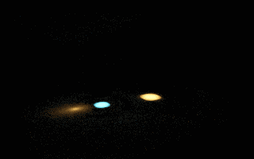
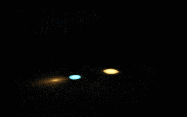

<style id="portfolio-reader-edition">/* Authoring controls are absent in reader editions. */
.studio-ui,.studio-preview-arrange,[data-layout-editor],.preview-layout-editor,
.review-panel,.review-dialog,.review-checkpoint,.review-mark-label,
.capture-slot,.capture-request-panel,.capture-request-dialog,.capture-requests,.case-captures,.capture-request,
.punchline-editor,.punchline-edit,.punchline-edit-button,[data-punchline-editor],.atmosphere-tools,
.tile-pending,
.pc-appearance-launch,.pc-appearance-panel{display:none!important}
.review-mark{border:0!important;background:transparent!important;box-shadow:none!important;padding:0!important}
</style><!doctype html><html lang="en"><meta charset="utf-8"><meta name="viewport" content="width=device-width,initial-scale=1"><title>Surface curve MIS · native comparison</title>
<style>:root{color-scheme:dark}*{box-sizing:border-box}body{margin:0;background:radial-gradient(ellipse at 10% 0%,#35412a66,transparent 55%),#0c1519;color:#ece7d7;font:16px/1.65 system-ui,sans-serif}main{max-width:1220px;margin:auto;padding:5vw 24px}a{color:#a4d4ee}h1,h2{font-family:Georgia,serif;line-height:1.17}h1{font-size:clamp(34px,4vw,57px);max-width:900px}h2{font-size:30px}.eyebrow{color:#e9bb68;text-transform:uppercase;letter-spacing:.13em;font-size:12px}.lead{font-size:20px;max-width:1000px;color:#c7d6d9}.note{border-left:3px solid #a28bd0;padding:12px 20px;background:#30233c55;color:#dbcff0}section{margin-top:35px;border:1px solid #77948b66;background:#18282bbd;padding:25px;border-radius:22px}.gallery{display:grid;grid-template-columns:repeat(3,minmax(0,1fr));gap:16px}figure{margin:0;overflow:hidden;background:#081014;border:1px solid #c6a36577;border-radius:16px}img{display:block;width:100%;height:auto}figcaption{padding:13px}figcaption strong{display:block;color:#ebc478}figcaption span{display:block;font-size:13px;color:#b1c2c8}.chart{margin:30px 0;border-radius:20px;border:1px solid #60767266}.links{display:flex;gap:24px;flex-wrap:wrap}footer{margin-top:32px;color:#a6b6bd;font-size:14px}@media(max-width:760px){.gallery{grid-template-columns:1fr}section{padding:16px}}</style>
<style>.portfolio-document-return{position:relative;z-index:100;display:flex;flex-wrap:wrap;gap:10px;padding:16px 24px;background:#111d25;border-bottom:1px solid #b3ceb74d;font:12px/1.5 Arial,sans-serif}.portfolio-document-return a{color:#cbded2;text-decoration:none;padding:8px 12px;border:1px solid #b3ceb733;border-radius:8px;transition:color .5s,box-shadow .5s,border-color .5s}.portfolio-document-return a:hover{color:#fff;border-color:#d9c18488;box-shadow:0 0 16px #d9c18422}@media(prefers-reduced-motion:reduce){.portfolio-document-return a{transition:none}}</style><link rel="stylesheet" href="../../../../portfolio-controls.css"><aside class="portfolio-document-return"><a href="../../index.html#html-library">← RadianceLab brochure</a><a href="../index.html">Document library</a><a href="../../technical/index.html">Current technical documents</a><a href="../../../../index.html">← Back to portfolio</a></aside><main><p class="eyebrow">RadianceLab · PP33 · measured comparison</p><h1>Two different curves.<br>The same path density.</h1><p class="lead">The new cone + plane pair splits one total sampling budget. In this forward tracer, the balance weights reduce to allocation fractions: changing which coordinate is shared changes correlation, not the marginal PDF.</p><p class="note">The pair is an orientation hedge, not a demonstrated caustic speedup. At equal cost, mixing independent equal-density sheet estimators cannot outperform the truly better single family's variance merely by applying balance MIS.</p><div class="links"><a href="../../technical/surface-pair-analysis.html">Theory and measured analysis →</a><a href="../../technical/surface-curves.html">Native path measure and scope →</a><a href="../../technical/capture-ledger.html#record-94c096af8895572966d5f080998684093ed977f7c4d426e145162601e868b09b" data-capture-record="pair-evidence/summary.json">Capture summary</a><a href="../../technical/capture-ledger.html#record-39ca9989cdcc56ffbe79f5dfa830a614d95394bd79a5bf9de468c414e4207bf1" data-capture-record="pair-evidence/manifest.json">Native capture record</a></div>
<p>320 × 200 linear HDR films, 524,288 launched rulings per image, six seed replicates per setting. Chart variance is the mean per-pixel luminance variance across independent seed images, not ground-truth MSE. Six seeds give a limited estimate; small differences should not be treated as a statistical ranking.</p><section><p class="eyebrow">Scene 107 · direct surface paths</p><h2>Direct receiver atlas</h2><div class="gallery"><figure><figcaption><strong>Cone</strong><span>Variance 1.000× best single · 3.31 ms/pass</span></figcaption></figure><figure><figcaption><strong>Plane</strong><span>Variance 1.113× best single · 3.45 ms/pass</span></figcaption></figure><figure><figcaption><strong>Balance pair</strong><span>Variance 1.066× best single · 3.37 ms/pass</span></figcaption></figure></div></section><section><p class="eyebrow">Scene 108 · caustic paths only</p><h2>Two coloured caustics</h2><div class="gallery"><figure><figcaption><strong>Cone</strong><span>Variance 1.000× best single · 3.29 ms/pass</span></figcaption></figure><figure><figcaption><strong>Plane</strong><span>Variance 1.046× best single · 3.30 ms/pass</span></figcaption></figure><figure><figcaption><strong>Balance pair</strong><span>Variance 1.009× best single · 3.37 ms/pass</span></figcaption></figure></div></section><section><p class="eyebrow">Scene 109 · caustic paths only</p><h2>Four-glass relay</h2><div class="gallery"><figure><figcaption><strong>Cone</strong><span>Variance 1.086× best single · 3.77 ms/pass</span></figcaption></figure><figure><figcaption><strong>Plane</strong><span>Variance 1.000× best single · 3.58 ms/pass</span></figcaption></figure><figure><figcaption><strong>Balance pair</strong><span>Variance 1.081× best single · 3.67 ms/pass</span></figcaption></figure></div></section>
<footer>The images above average six retained seed films for visual inspection. Every image uses exposure 1.4 and the same 1−exp(−exposure·RGB), then sRGB transform. No local edits, denoising, cropping or blur. Context is disabled, so black glass/background regions represent omitted context, not missing geometry. Timing excludes startup and two warmup passes; CPU i9-13980HX, native OpenGL host RTX 4080 Laptop GPU. The implementation remains restricted to finite-depth L[S]*DE paths.</footer></main></html>